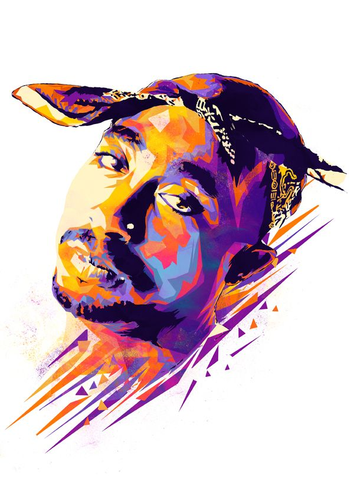

Born in New York City in 1971, Tupac Shakur, known by his stage name 2Pac, was an American rapper. Shakur has sold more than 75 million albums worldwide, making him one of the best-selling music artists in the world. Most of Tupac's songs are about growing up amid violence and hardship in ghettos, racism, other social problems and conflicts with other rappers during the East Coast-West Coast hip hop rivalry. Shakur was shot and killed in Las Vegas, Nevada, in 1996.
Early Life
Shakur has become a legend in hip-hop and rap circles for his talent, his violent behavior, and his brutal death. The son of Black Panther activists,

Shakur was raised by his mother Afeni Shakur. She was actually in jail on bombing charges during her pregnancy with Tupac. She was later acquitted in the case. He had no contact with his biological father, Billy Garland, until he was an adult.
According to The Rolling Stone Encyclopedia of Rock & Roll, Shakur was originally named Lesane Parish Crooks,
but his moniker was soon changed to Tupac Amaru Shakur. "Tupac Amaru" means "shining serpent." He had a difficult childhood, moving frequently around in the New York City boroughs of Brooklyn and the Bronx. Shakur received an education in radical politics from his mother, but he also saw some of life's hardships through her struggles with substance abuse. In his youth, he explored acting by becoming a member of the 127th Street Ensemble, a Harlem-based theater company.
As a teenager, Shakur attended the Baltimore School for the Arts, where he took acting and dance classes, including ballet. While living in Baltimore, he discovered rap and began performing as MC New York. In the late 1980s, Shakur and his family moved to the West Coast. He joined the Oakland, California-based hip-hop group Digital Underground, which earlier had scored a hit with the song "The Humpty Dance." Shakur appeared on two of the group's recordings—1990's This Is an EP and Sons of the P before going solo.
Solo Career
In 1991, Shakur emerged as a solo artist—using the name 2Pac—with his debut album 2Pacalypse Now. The track "Brenda's Got a Baby" reached No. 3 on the Billboard Hot Rap Singles chart. His second album, Strictly 4 My N. I. G. G. A. Z., crossed over to the pop charts, with singles "I Get Around" and "Keep Ya Head Up." The album went platinum, selling more than a million copies.
Around this time, Shakur made his film debut in the 1992 urban crime drama Juice with Omar Epps, Samuel L. Jackson and Queen Latifah. He showed his softer side in Poetic Justice (1993), which was billed as "A Street Romance." Shakur starred opposite Janet Jackson in the film. The following year, he played a drug dealer in the basketball drama Above the Rim.
Death
During his career, Shakur had become embroiled in a feud between East Coast and West Coast rappers. He was known to insult his enemies on his tracks. On a trip to Las Vegas to attend a boxing match, Shakur was shot while riding in a car driven by Knight on September 7, 1996. He died six days later, on September 13, 1996, from his injuries at a Las Vegas hospital. Shakur was only 25 years old at the time of his death, and his killer has never been caught. Since his death, numerous albums of his work have been posthumously released, selling millions of copies.
Shakur's life has inspired numerous books and theatrical productions, including the 2012 musical Holler If Ya Can Hear Me. That same year, he made a posthumous appearance at the Coachella Valley Music and Arts Festival with the help of technology. A 2-D image of the late rapper accompanied Dr. Dre and Snoop Dogg during one of their performances at the California event. Shakur's return to the stage from beyond the grave stirred up a new wave of interest in his videos and his music.